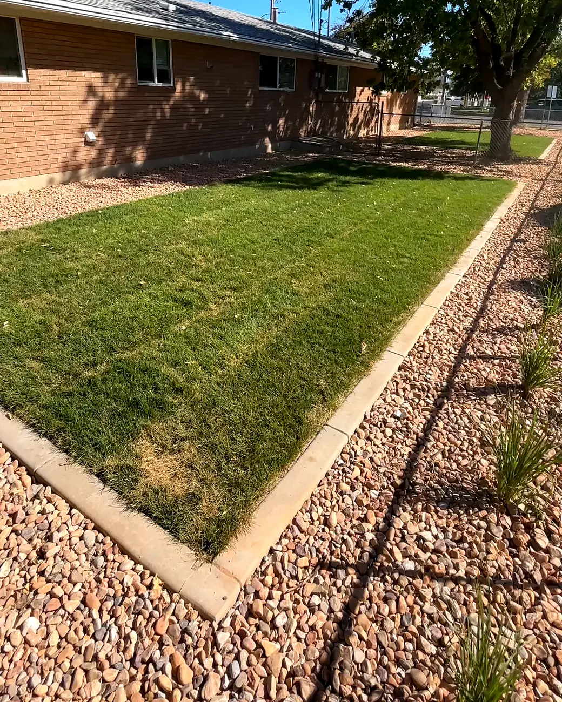
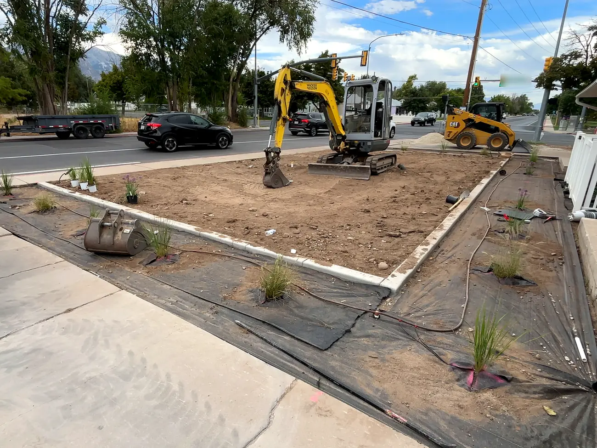
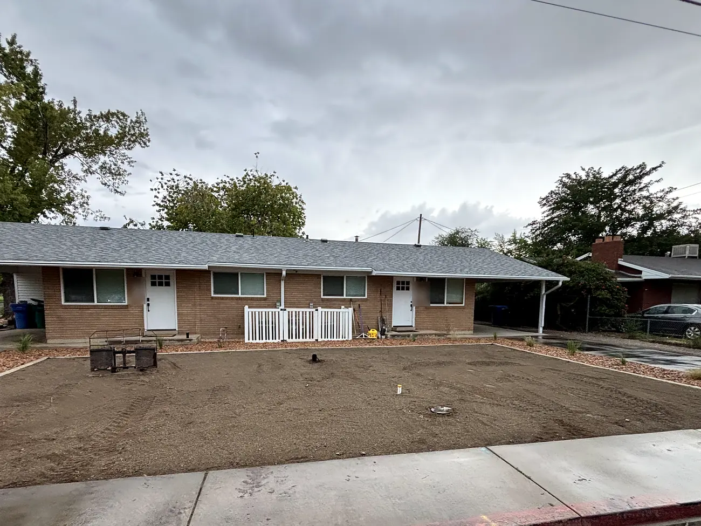
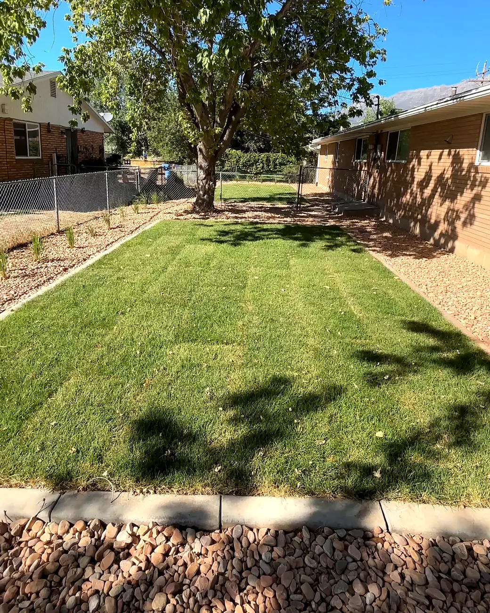
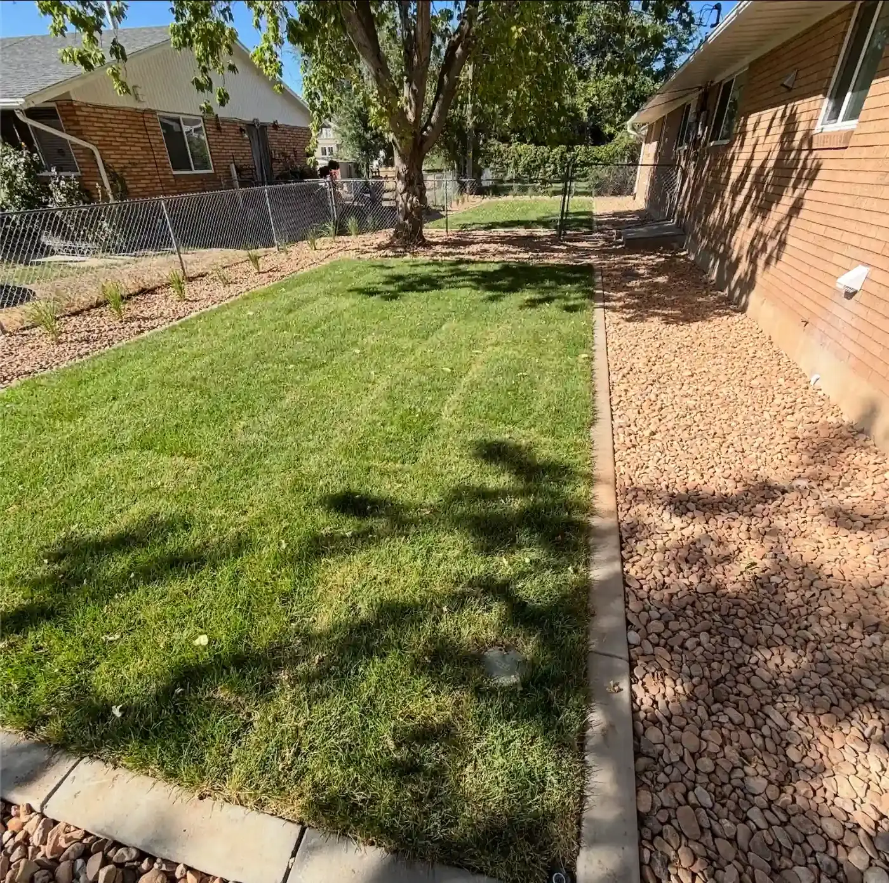
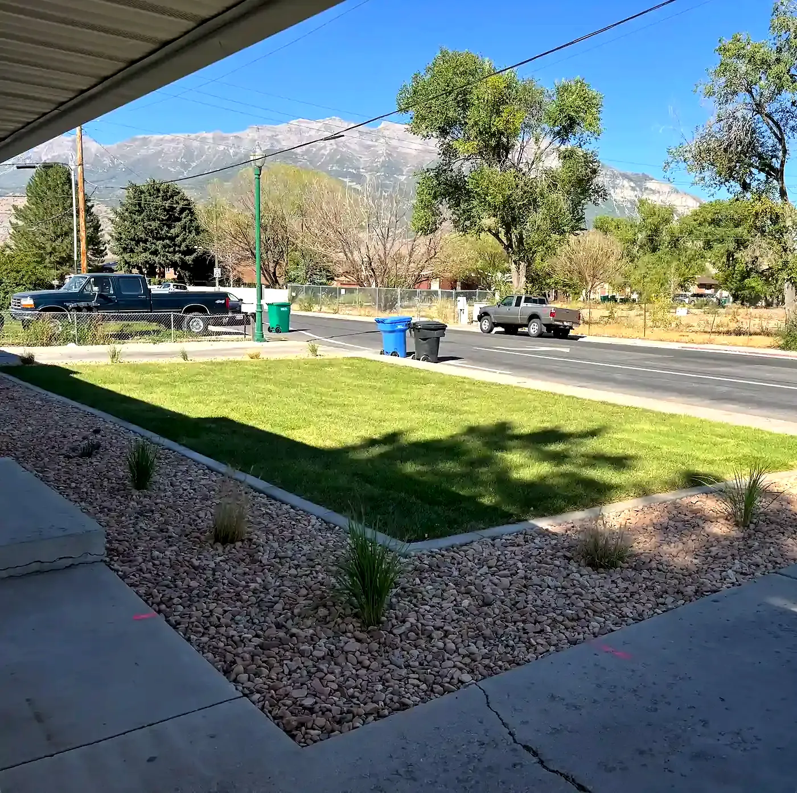
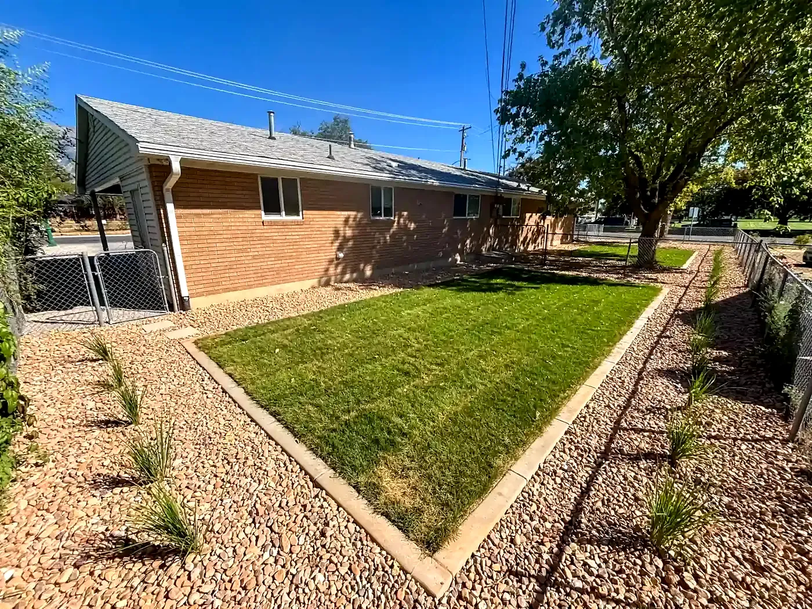

Home / Landscape curbing
Concrete curbing
Concrete landscape curbing in Utah County
Concrete curbing gives lawns, rock beds and planters a clean, permanent edge. It keeps rock out of the grass, gives the mower a line to follow, and makes the whole yard look finished.
- 5.0 · 22 Google reviews
- Free estimates
- Same-day response
- Hablamos español

Why curbing
A clean edge that stays put
Rock stays in the beds
A solid edge keeps rock and mulch where they belong and out of the lawn.
A clean mowing line
Run the mower wheel along the curb and the edge stays sharp all season.
Holds its shape
Concrete doesn't pull up, warp or rot the way plastic and wood edging do.
Curves and corners
It's poured in place, so it follows whatever lines your yard needs, from straight runs to sweeping curves.
From layout to finished edge
How a curbing job comes together



Lay out the lines
We mark the curb lines with you on site, so the lawn and beds end up the shape you want.
Prep the ground
A level, compacted path for the curb to sit on, so it stays straight and doesn't settle.
Pour & shape
Concrete poured and shaped along the marked line.
Finish the yard
Once it sets, sod, rock or mulch goes in on each side. We can do all of it.
Our work
Curbing we've installed



Google reviews
Clean work, start to finish
Sergio and his crew were awesome! They did great work, communicated well throughout the whole process, were honest and trustworthy. I would recommend them to anyone and will use them again in the future. We hired them to do a whole remodel of our landscaping including installing sprinklers, cement curbing, sod and xeriscaping. It turned out great, we are very pleased with the quality and care that went into their work.
Sergio helped me with a few landscape retaining walls in my backyard, they turned out great!
Sergio did a great job explaining what was going on with our system and explaining different options to fix it within our budget! We came up with a plan and he was diligent and honest with his work. Everything looks and works fantastic! A+
Service area
Based in Springville, working across Utah County
Sprinkler repairs mostly stay close to home. Bigger landscape and excavation projects can go anywhere along the Wasatch Front. Not sure if you're in range? Send a text and ask.
- SpringvilleHome base
- Mapleton
- Spanish Fork
- Salem
- Payson
- Provo
- Orem
- Wasatch FrontLarger projects
Questions
Common questions
How much does landscape curbing cost?
Curbing is usually priced by the foot. The total depends on how many feet you need, how many curves and corners there are, and how much prep the ground needs. Estimates are free.
Can you add curbing to my existing yard?
Yes. We cut a clean line along your current lawn and beds, put in the curb, and patch the sod and rock up to it.
Do you do the sod and rock too?
Yes. Curbing is usually part of a bigger job with sod, rock, plants and sprinklers. See yard renovations.
Will my sprinklers spray the curb?
We adjust or move heads along the new edge so the water lands on the lawn, not the concrete.
Is curbing good for a xeriscape?
Yes. It's one of the best ways to keep a low-water yard looking neat, with rock on one side and lawn or mulch on the other. See xeriscaping.